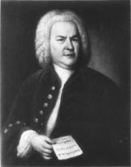

Johann Sebastian Bach (1685-1750), en önemli barok bestekârdır ve belki de tüm zamanların en önemli bestecisidir. Onun dinî vokal müziği –kantatlar ve ilahi besteleri– orkestralı konçertoları ve ustalıklı org eserleri, ulvi armoniler ve birleştirilmiş melodilerle doludur ve onun müzikal hassasiyeti, dehadan ödün vermez. Yirminci yüzyılın caz ve pop bestecileri de dahil, kendinden sonra gelen neredeyse tüm bestecileri etkilemiştir.

Bach, Thuringia denen bir bölgenin Eisenach kasabasında, 21 Mart 1685 tarihinde doğdu. Genç bir adam olarak, Arnstadt, Lübeck, Mülhausen ve Weimar’daki Lüteriyen kiliselerde çeşitli randevular ve misafirlikler arasında gidip geldi. Bach’ın kariyerinde değişmeyen şey, insanların onun müziğini vasat, karmaşık ve tatminkârlıktan uzak bulmalarıydı. Weimar’da saray orgcusu olduğu sıralar (1708-1717), orkestra şefliğine yükseldi. 1717’de Cothen’deki Lüteriyen Prensi Leopold’un sarayına taşındı.
1720’de Bach’ın ilk eşi öldü ve bugün alıştırmalarında çoğu piyanist tarafından çalışılan pek çok etüt kitabını ithaf ettiği Anna Magdalena isimli bir saray şarkıcısı ile evlendi. Cothen’de geçirdiği zamanda, efsanevi Brandenburg Konçertoları ve Matta Azabı oratoryoları gibi ünlü kantatlarının bir kısmını üretti. 1722’de, muazzam eseri Mass in B Minor tamamlandıktan sadece bir yıl sonra, 1750’ye kadar yaşadığı Leipzig şehri ve dört kilise için müzik direktörü oldu.
EK BİLGİLER:
1. Bach’ın ilk eşinden altı, ikinci eşinden on üç çocuğu oldu.
2. Bach’ın çocuklarının çoğu bebekliklerinde öldü, ama Johann Christian Bach (1735-1782) ve Carl Philipp Emanuel Bach (1714-1788) dahil dördü tanınmış besteciler oldular.
3. Bach’ın erken dönem müzik eğitimini babası ve ağabeyleri vermişti, ama o büyük ölçüde kendi kendine işi öğrenmiş bir besteciydi.